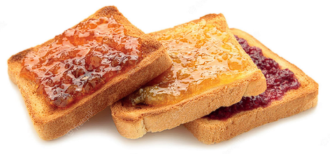

Naturel Gourmet es una empresa familiar, ubicada en el Departamento de Chimbas, Provincia de San Juan, República Argentina. Dirigida por Ingenieros en Alimentos, que elabora desde el 01 de marzo del 2010, Mermeladas de fruta endulzadas con jugo de uva concentrado
